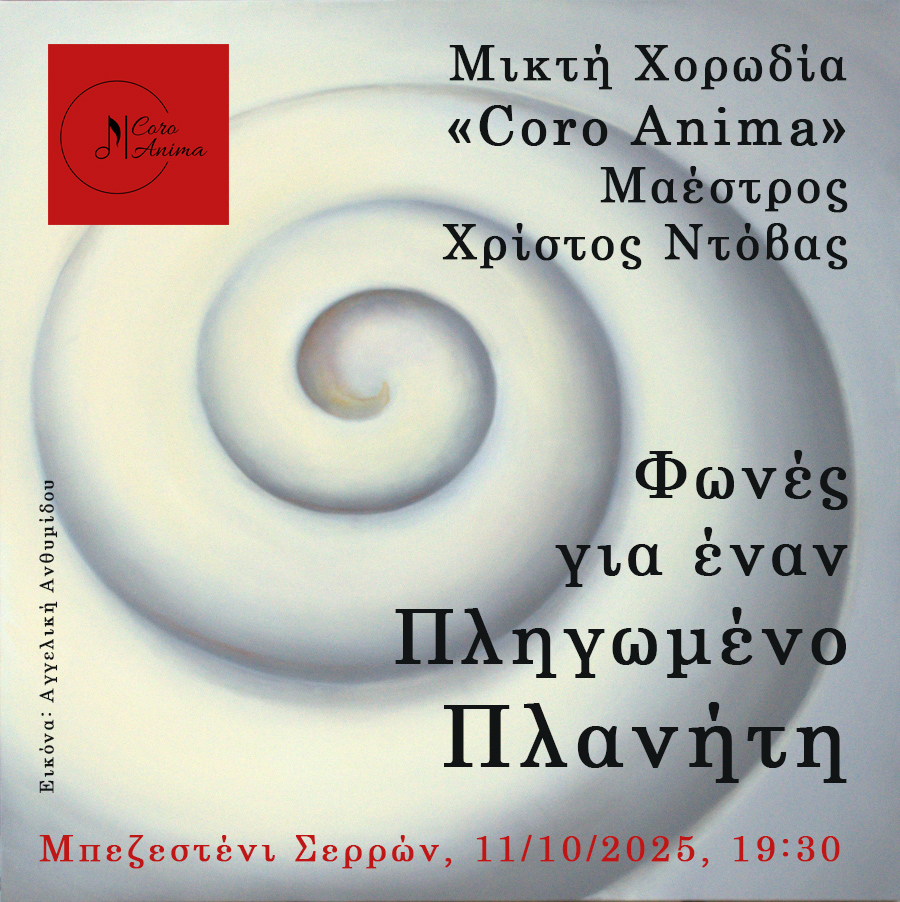
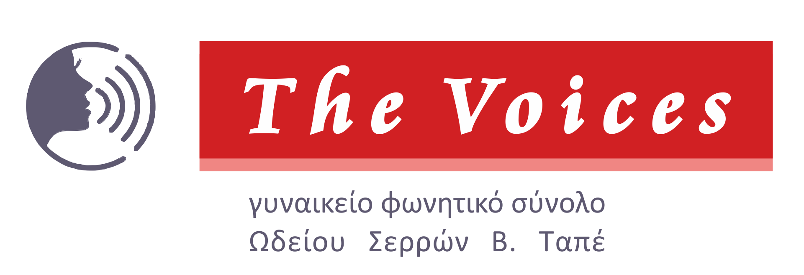
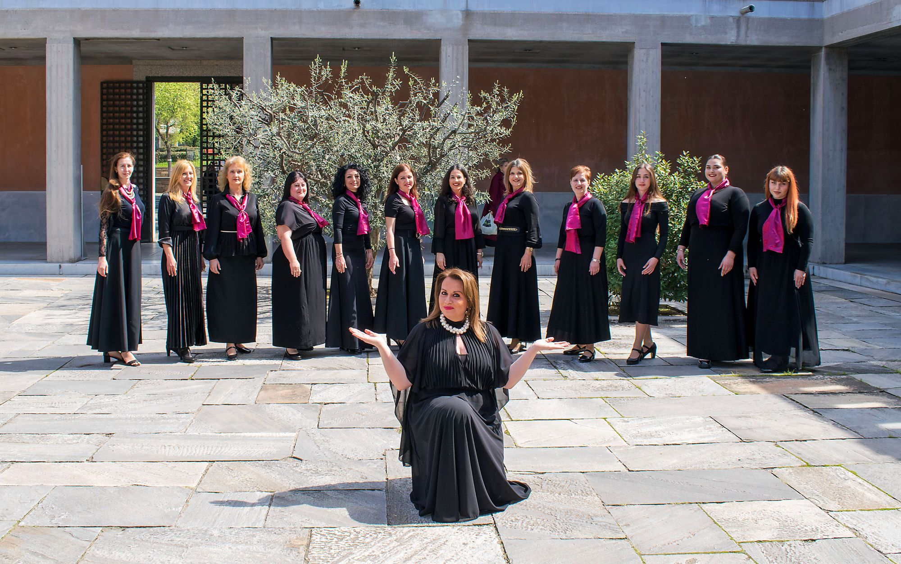

ΦΩΝΕΣ ΓΙΑ ΕΝΑΝ ΠΛΗΓΩΜΕΝΟ ΠΛΑΝΗΤΗ, ΣΕΡΡΕΣ
με την μικτή χορωδία Coro Anima και μαέστρο τον Χρίστο Ντόβα.
Σάββατο, 11 Οκτωβρίου 2025, 19:30.
Μπεζεστένι Σερρών
Είσοδος ελεύθερη

Η Μικτή Χορωδία Coro Anima ιδρύθηκε το 2023, αποτελούμενη από περίπου 35 ενήλικα μέλη που μοιράζονται την αγάπη για το τραγούδι και την επιθυμία για μουσική συνύπαρξη. Η δημιουργία της πηγάζει από την κοινή διάθεση για έκφραση και επικοινωνία μέσω της μουσικής τέχνης.
Το ρεπερτόριο της χορωδίας χαρακτηρίζεται από την ευρύτητα και την ποικιλία του. Περιλαμβάνει έργα ελληνικής λόγιας μουσικής, αναδεικνύοντας την πλούσια παράδοση του τόπου μας, ενώ παράλληλα αγκαλιάζει κλασικές συνθέσεις και δημοφιλή ακούσματα, προσφέροντας μια ολοκληρωμένη μουσική εμπειρία.
Οι πρόβες της χορωδίας διεξάγονται ανελλιπώς κάθε Τετάρτη, στους φιλόξενους χώρους του Συλλόγου «Απόστολος Παύλος» (Φάρος). Την καλλιτεχνική διεύθυνση και τη διεύθυνση της χορωδίας έχει αναλάβει ο μαέστρος Χρίστος Ντόβας.Παρά τη σύντομη ιστορία της, η Coro Anima έχει ήδη σημειώσει σημαντικές συμμετοχές σε αξιόλογες μουσικές διοργανώσεις. Μεταξύ αυτών συγκαταλέγονται:
• Το 2ο Χορωδιακό Φεστιβάλ Δήμου Ωραιοκάστρου, όπου παρουσίασε δείγμα της δουλειάς της.
• Το 2ο Φεστιβάλ Χορωδιών “Christmas around the world” που διοργανώθηκε από το Βαφοπούλειο Πνευματικό Κέντρο του Δήμου Θεσσαλονίκης και έλαβε χώρα στην επιβλητική Αίθουσα Τελετών του Αριστοτελείου Πανεπιστημίου Θεσσαλονίκης.
• Η συνάντηση “Από την Πίστη στην Τέχνη: Γκόσπελ και Κλασσικές μελωδίες”, που διοργανώθηκε από τον Δήμο Καλαμαριάς.
• Το Χορωδιακό Αφιέρωμα για τα 100 Χρόνια Θεοδωράκη: “Νύχτα Μαγική στην Όμορφη Πόλη”. Αυτή η ιδιαίτερα σημαντική εκδήλωση πραγματοποιήθηκε στο Μέγαρο Μουσικής Θεσσαλονίκης, υπό την αιγίδα του Υπουργείου Εσωτερικών (Τομέας Μακεδονίας και Θράκης), σε συνεργασία με το Τεχνικό Επιμελητήριο Ελλάδας/Τμήμα Κεντρικής Μακεδονίας και τον Οργανισμό Μεγάρου Μουσικής Θεσσαλονίκης, αναδεικνύοντας τη χορωδία σε ένα κορυφαίο πολιτιστικό γεγονός.
Η Μικτή Χορωδία Coro Anima συνεχίζει την πορεία της με αφοσίωση στη μουσική, επιδιώκοντας
την καλλιτεχνική εξέλιξη και προσφέροντας στο κοινό αξέχαστες μουσικές στιγμές.
The Voices

Στην συναυλία θα συμμετάσχει και το
Γυναικείο Φωνητικό Σύνολο 'The Voices' του Ωδείου Σερρών Βασίλη Ταπέ
Το Γυναικείο Φωνητικό Σύνολο ‘’The voices’’ του Ωδείου Σερρών Βασίλη Ταπέ , λειτουργεί από τον Σεπτέμβριο του 2018. Είναι ένα σύνολο που απαρτίζεται από γυναικείες φωνές ηλικίας από 18 έως 55 ετών που τα περισσότερα μέλη δεν γνωρίζουν μουσική αλλά είναι λάτρεις της Χορωδιακής Τέχνης. Σκοπός του συνόλου είναι η μουσική καλλιέργεια των μελών μέσα από το χορωδιακό τραγούδι διαφόρων μουσικών εποχών ελλήνων και ξένων συνθετών και η προβολή της πολιτιστικής κουλτούρας αυτού του ρεπερτορίου.
Η πρώτη τους εμφάνιση πραγματοποιήθηκε στην Χριστουγεννιάτικη εκδήλωση ‘’Μελωδίες Χριστουγέννων’’ του Ωδείου Σερρών Βασίλη Ταπέ στην πόλη των Σερρών τον Δεκέμβριο του 2018. Έχουν πάρει μέρος στο Φεστιβάλ Χορωδιών με τίτλο ‘’Φωνές εν Χορώ’’ που πραγματοποιήθηκε στη Στέγη Γραμμάτων και Τεχνών Βέροιας ,διοργάνωση της ΚΕΠΑ Δήμου Βέροιας.
Συμμετείχαν στην εορταστική εκδήλωση για την ‘’Παγκόσμια Ημέρα της Γυναίκας’’ που συνδιοργάνωσε το Επιμελητήριο Σερρών μαζί με το Ωδείο Σερρών Βασίλη Ταπέ , στην αίθουσα ‘’Γ. Χρηστίδης’’ του Επιμελητηριακού Μεγάρου, με τιμώμενη προσωπικότητα την αρχαιολόγο Κυρία Κατερίνα Περιστέρη για το πλούσιο ανασκαφικό της έργο. Πήραν μέρος στην ‘’ 2η Χορωδιακή Συνάντηση Βισαλτίας ‘’ στην Νιγρίτα, διοργάνωση της Χορωδίας Κ.Α.Π.Η. Νιγρίτας ‘’Γερακίνα’’. Επίσης διάνθισαν μουσικά την Έναρξη του 14ου Πανελλήνιου Συνεδρίου Δικηγορικών Συλλόγων ‘’Δικηγορία και Δικαιοσύνη στη νέα εποχή’’ στο αμφιθέατρο ‘’Ευαγόρας Παλληκαρίδης’’ του ΤΕΙ Σερρών ,παρουσία του Προέδρου της Δημοκρατίας Προκόπη Παυλόπουλου. Έχουν πάρει μέρος σε εκδηλώσεις της ‘’Εμμέλειας, Φιλόπτωχος αδελφότης Κυριών Σερρών’’ στην αίθουσα εκδηλώσεων του Συλλόγου ‘’Νίνα Μπεσίρη’’. Έντυσαν μουσικά την εκδήλωση ‘’100 χρόνια του Εμπορικού Συλλόγου Ν. Σερρών’’ στην αίθουσα ‘’Γ. Χρηστίδης ‘’ του Επιμελητηριακού Μεγάρου Σερρών. Συμμετείχαν στις εκδηλώσεις του Ωδείου Σερρών Βασίλη Ταπέ , Ωδείο Σιδηροκάστρου και στο Ωδείο ‘’Ορφέας’’ Ωραιοκάστρου .
Συμμετείχαν στην 4η Χορωδιακή Συνάντηση του ομίλου ‘’Ορφέας’’ Σερρών. Πήραν μέρος στην εκδήλωση ‘’Από την άλωση της Πόλης στην άλωση της Τριπολιτσάς 1453-1821’’ που διοργάνωσαν οι Ε.Α.Α.Σ. Σερρών και ΣΕΑΝ Σερρών στο Δημοτικό θέατρο ‘’ Αστέρια’’ , στο Δημοτικό Ωδείο Δράμας και στο Σιδηρόκαστρο. Πήραν μέρος σε Χορωδιακό Φεστιβάλ Θρησκευτικής μουσικής στο Βυζαντινό Μουσείο Πολιτισμού Θεσσαλονίκης.
Εν καιρώ πανδημίας συνεργάστηκαν σε διαδικτυακό πρότζεκτ με την Πολυφωνική χορωδία ‘’Salve Regina’’ Βαρσοβίας Πολωνίας. Υπεύθυνος για τις χορωδιακές επεξεργασίες έχει ο συνθέτης και μαέστρος Γεώργιος Ταπές ο οποίος είναι και ο πιανίστας του Συνόλου.
Την διεύθυνση και την διδασκαλία του Φωνητικού Συνόλου έχει η μαέστρος Αναστασία Ταπέ η οποία είναι απόφοιτη της Μουσικής Ακαδημίας του Φρειδερίκου Σοπέν της Βαρσοβίας Πολωνίας στην ειδικότητα Διεύθυνση Χορωδίας.

Παραγωγή: Sotto Voce (Contemporary Arts) Ltd